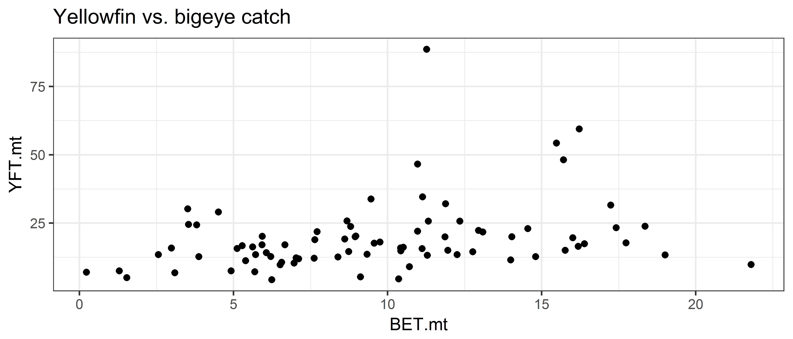

Introduction to the ggplot2 package
Getting things ready
First we load the ggplot2 package:
# Load ggplot2 package and some others
library(ggplot2)Sample data set
Your working directory can be found with the command getwd(). This is the directory where data is loaded from and saved to by default. Commonly this directory is set to the same directory as where your R script or Markdown file is.
If the data set is in your working directory it can be read in directly without giving the directory name. We assume the data set is in the working directory, read it in, and check the result with the head command.
# catch and effort data
ce <- read.csv("sample.csv")head(ce) Yr.Month Yr Month Vessels Trips Sea.Days Hooks.100 ALB.mt BET.mt
1 2010-01 2010 1 9 101 13 1790 241.63958 4.922446
2 2010-02 2010 2 16 89 21 1685 70.58278 1.537357
3 2010-03 2010 3 9 93 22 1688 67.66562 6.242182
4 2010-04 2010 4 11 102 17 2836 109.43606 10.358611
5 2010-05 2010 5 17 167 33 3446 333.18782 17.738877
6 2010-06 2010 6 11 161 28 3327 262.93567 16.185670
YFT.mt OTH.mt ALB.no BET.no YFT.no OTH.no
1 7.497130 43.80626 18680 253 959 227
2 5.039798 21.12126 3639 90 296 133
3 4.291998 18.62458 4791 326 187 100
4 4.558048 18.19926 5609 301 172 80
5 17.786435 30.26229 22843 853 900 176
6 16.482259 31.17723 10351 839 856 193Ps: If the data set is in a different directory from your working directory then you need to tell the read.csv command where this directory is.
Inital plot setup
We wish to make a histogram and density plot for the column ALB.mt (monthly albacore tuna in metric tonnes).
The initial setup for these plots is done with the ggplot function, which by itself it produces an empty plot.
ggplot(data = ce, aes(x = ALB.mt)) 
The purpose of the ggplot function is to
- state what data frame to use:
data = ce - state what columns we wish to plot:
aes(x = ALB.mt)
The argument aes is short for aesthetic and refers to general aspects of a plot (e.g. what is to be plotted, should the plot be broken up into groups such as months). You’ll see more examples below to clarify what this means.
The code above says that we wish to plot the column ALB.mt from the data frame ce, but doesn’t say how to do this plot (e.g. a histogram, density, scatter plot). To give a specific type of plot, further instructions are added to the code, as we will see in the following sections where we make histograms and density plots.
Histogram and density plots
In this section we make histograms and density plots for the albacore tuna catch.
A non-empty plot will be made once you state what sort of plot you wish to make (e.g. histogram or density plot), which is referred to as the geometry for the plot. In this case we wish to plot x (i.e. ALB.mt) as a histogram, so we use the function geom_histogram. Refer to the ggplot2 cheat sheet for the other type of plots you can make for a single column of data (called One Variable in the cheat sheet)
As choosing the bin width is often best done manually, to explore what patterns there are in the data, the function suggests using the binwidth argument to do this. The default is to use 30 bins for the plot.
ggplot(data = ce, aes(x = ALB.mt)) +
geom_histogram()`stat_bin()` using `bins = 30`. Pick better value with `binwidth`.You can give arguments to the geom_histogram function for the bin width and fill colour of the histogram. The default bin width looks pretty reasonable, but I’ve a chosen something different to illustrate setting the bin width.
ggplot(data = ce, aes(x = ALB.mt)) +
geom_histogram(binwidth = 20, fill = "darkblue")
Now do a histogram with bins of size 10, and fill the rectangles with another colour.
Use theme_set() to change the default plot theme to have a white background.
theme_set(theme_bw()) # set all ggplots to have a black and white background
ggplot(data = ce, aes(x = ALB.mt)) +
geom_histogram(binwidth = 10, fill = "tomato3")
In the next plot we explicitly define the bin widths using the breaks argument. The first bin goes from 0 to 20 and is centred on 10 metric tonnes.
To change the interval width in function seq(), modify the value of the by= argument to 50.
ggplot(data = ce, aes(x = ALB.mt)) +
geom_histogram(breaks = seq(from = 0, to = 350, by = 50),
fill = "darkblue")
If we wish to make a density plot we change the “geometry” by using the geom_density function. The argument adjust for this function determines how smooth the density plot is, with higher values giving smoother plots.
ggplot(data = ce, aes(x = ALB.mt)) +
geom_density(adjust = 0.1, fill = "darkblue") # play with the adjust argument to see what it does
ggplot(data = ce, aes(x = ALB.mt)) +
geom_dotplot(fill='darkblue', color='red')`stat_bindot()` using `bins = 30`. Pick better value with `binwidth`.
Scatterplots
Introductory example
In this section we plot the big eye tuna catch against the albacore tuna catch. As before the initial plot setup is done with the ggplot function, adding in another argument for the big eye tuna catch.
## Both x and y are continuous variables
## In the cheatsheet, look under the Two Variables/Continous X-Continuous Y panel
ggplot(data = ce, aes(x = ALB.mt, y = BET.mt)) The code above says that we wish to plot the columns “ALB.mt” and “BET.mt”" from the data frame “ce”, but doesn’t say how to do this plot (e.g. using points or lines).
As we wish to plot points we use the function geom_point. Refer to the ggplot2 cheat sheet to see what other types of plots can be made (under the heading Continuous X, Continuous Y).
ggplot(data = ce, aes(x = ALB.mt, y = BET.mt)) + geom_point()
We could also plot this using lines if we wanted to, using geom_line instead.
ggplot(data = ce, aes(x = ALB.mt, y = BET.mt)) + geom_line()(Ugh!)
We can even combine different plot types:
ggplot(data = ce, aes(x = ALB.mt, y = BET.mt)) +
geom_line(color='grey') + geom_point(color='red') # can change individual features by layerIf we wanted to keep track of which months was which on the graph, we could specify in the aes function to also colour the points by month:
ggplot(data = ce, aes(x = ALB.mt, y = BET.mt, color=Month)) +
geom_point()To treat the months as discrete values, add as.factor(Month) instead, this makes R treat the month numbers as categories:
ggplot(data = ce, aes(x = ALB.mt, y = BET.mt, color=as.factor(Month))) +
geom_point() Exercises
- Make a histogram of yellowfin catch with appropriate bin widths. Bonus: Add properly labelled x and y axis.
ggplot(data = ce, aes(x = YFT.mt)) +
geom_histogram(binwidth = 5, fill = "gold") +
labs(x='Monthly yellowfin catch (mt)', y='Count', title='Yellowfin', subtitle='A very tasty tuna')- Make a density plot of bigeye catch, coloured with the bigeye WCPFC colour (
firebrick)
ggplot(data = ce, aes(x = BET.mt)) +
geom_density(adjust = 0.5, fill = "firebrick", color=NA) +
labs(x='Monthly bigeye catch (mt)', y='Smoothed count', title='Bigeye tuna',
subtitle='A tuna previously thought to be overfished')- Make a scatter plot of yellowfin catch (Y) vs. bigeye catch (X).
ggplot(data = ce, aes(x = BET.mt, y = YFT.mt)) +
geom_point() +
ggtitle('Yellowfin vs. bigeye catch') 
- Make a scatter plot of yellowfin catch by month, with the years coloured as categories.
ggplot(data = ce, aes(x = Month, y = YFT.mt, color=as.factor(Yr))) +
geom_point() +
ggtitle("Monthly yellowfin catch") + ylab('Yellowfin catch (mt)')Bonus exercise (woop!)
Plot the average yellowfin catch per month (use dcast to create a new dataset with the mean.) Don’t call it Brad.
Step 1: Calculate the mean YFT catch per month (goal: get a table with a month column, and a column for mean YFT catch)
library(reshape2)
## First read-in the dataset from this morning
ce.long <- read.csv('sample_data-long.csv')
## Now calculate the mean catch by species and month
tuna.mean <- dcast(ce.long, Month ~ Species, value.var='Catch.mt', fun.aggregate=mean)
head(tuna.mean) Month ALB BET OTH YFT
1 1 95.25882 6.096174 22.40157 30.30744
2 2 46.20435 6.226138 18.33905 16.67016
3 3 43.57900 8.231454 15.07012 15.04155
4 4 81.69371 9.533266 14.03734 16.16526
5 5 153.49813 14.854605 19.06319 29.83772
6 6 147.77786 10.134886 21.12565 22.86039Step 2: Make the plot with month as the x-variable and mean YFT as the y-variable
ggplot(data=tuna.mean, aes(x=Month, y=ALB)) + geom_point() + geom_line()Adding both YFT, BET and ALB on the same plot when we have individual columns for each
ggplot(data=tuna.mean, aes(x=Month, y=ALB)) + geom_line(color='forestgreen') +
geom_line(aes(y=YFT), color='gold') +
geom_line(aes(y=BET), color='firebrick')Adding a trend line to the plot
Adding a smoothed line helps in following the pattern of the points, and this can be done with the function geom_smooth, with the default a loess curve with a 95% confidence interval.
This is adding a linear regression
ggplot(data = ce, aes(x = ALB.mt, y = BET.mt)) +
geom_point() +
geom_smooth(method='lm', colour = "red")
This is adding a smoother
ggplot(data = ce, aes(x = ALB.mt, y = BET.mt)) +
geom_point() +
geom_smooth(colour = "red")`geom_smooth()` using method = 'loess' and formula 'y ~ x'Monthly albacore catch over time
The ce data frame has columns labelled year and month, but they are given as integers, and R does not know that 12 means December. We create a numeric year-month variable by transforming the months into fractions of the year.
# Make a new column called date
ce$date <- ce$Yr + (ce$Month-1)/12
head(ce$date)Now we the plot the catch over time.
ggplot(ce, aes(x = date, y = ALB.mt)) +
geom_point() +
geom_line(colour = "brown", linetype = 2)
Adding plot labels
You can easily add axes labels and a plot title with ggplot, using the commands xlab, ylab and ggtitle:
ggplot(ce, aes(x = date, y = ALB.mt)) +
geom_point() +
geom_line(colour = "brown", linetype = 2) +
xlab("Date") +
ylab("Monthly albacore catch (metric tonnes)") +
ggtitle("Albacore catch over time")Further examples and help on the internet
Solutions to common graphing problems
http://www.cookbook-r.com/Graphs/index.html
Similar to the first link, but more detailed. Lots of example plots.
http://www.sthda.com/english/wiki/ggplot2-essentials
All of the package functions on one page, with examples
Copyright © 2017 Pacific Community. All rights reserved.